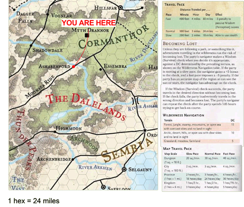

Manor Inn D&D

Welcome to the ManorInnDND homepage. The purpose of this site is to track the exploits of your adventuring party and provide information about the world they explore. Right now I am thinking we will track the following information here:
- Character Development - Personality, (Mis?)Deeds, Physical Description, Picture
- Session Notes - A synopsis of each session
- Adventure Hooks - Notes on potential adventure leads
- Handouts - Maps and other handout-type media
- Date/Time/Place of next Session
Next Session Will Be...
At 4 PM, Carrie and Brandons
On ?????
Time Remaining:
The Adventuring Party
A brief description of each member of the party follows. There is also a roster of the fallen.
Everin Godrick (Charlie)
Ebberon is a roguish half-elf, little is known of him so far.
Galifraen Amarondel (Luke)
Galifraen is an old high-elf accustomed to a nobles prestige.
Onnie Ottilie (Sarah)
Onnie is a young Aasimar, she enjoys games of fortune and helping others.
Zodius Shadowtree (Brandon)
Zodius is an peculiar gnome, versed in the magical arts. He is often observed "pondering" his orb.
Moa (Carrie)
Moa is a elven druid, she carries a bow.
Map of Local Area:
Links to Session Recaps:
You can find links to descriptions of the events which occurred in each session below.
The Spoooooky Mansion (Levels 1 - ?)
Below are sessions which took place during our first adventure, "The Spoooooky Mansion".